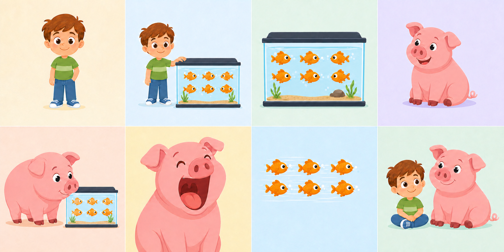
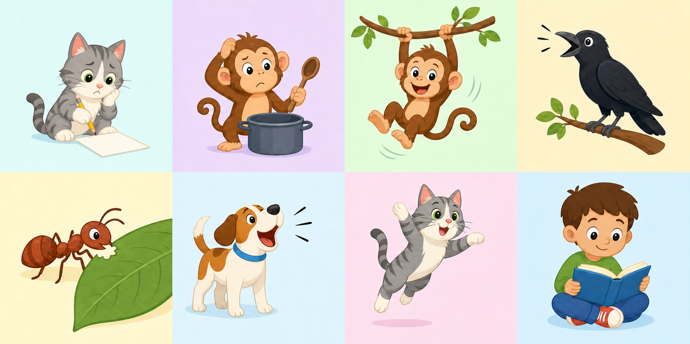

Early Word Patterns
A small step beyond v4: learners connect sounds, pictures, missing letters, and high-frequency word patterns without shifting into Story Grammar.

DR0001 · SHORT i
Short i
Tim, Fish and Pig
Move from the short i sound to pig, fish, missing-vowel work, and one short-i sentence puzzle.
Vowel soundListen for pigMissing vowelSentence puzzle
Start DR0001 →
DR0002 · CAN / CAN’T
Can or Can't
Hear, spell, choose, and complete can and can’t patterns using clear animal actions.
Can / can’tSpell can’tListen & chooseSentence blank
Start DR0002 →v4.1 remains a Decodable Reader quiz: its focus is decoding and word-pattern use, not narrative comprehension.